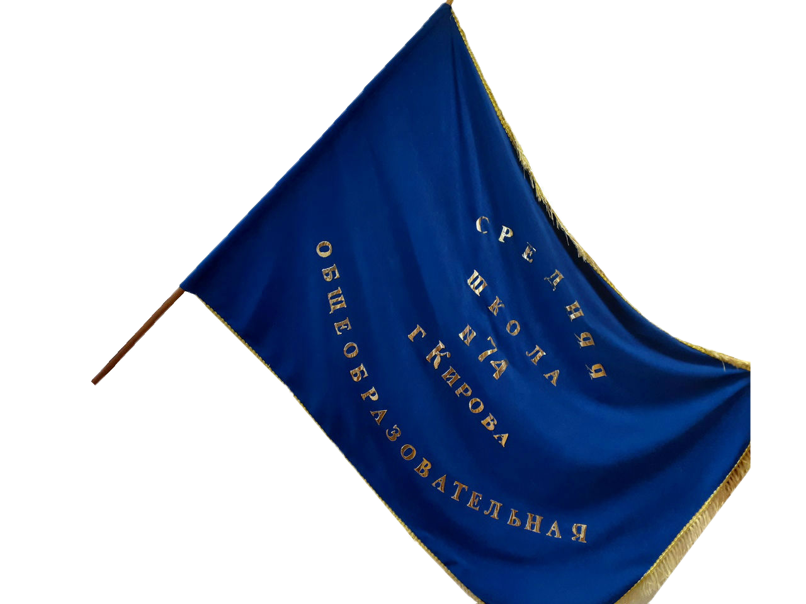

- C 2009 по 2017 год я обучалась в КОГОБУ Средняя школа пгт. Опарино . После я переехала в город Киров к своим родителям .
- С 2017 по 2020 год я уже обучалась в МБОУ СОШ № 74 в лицейском классе с углубленным изучением математики.
- В 9 классе я сдавала ОГЭ по информатике и физике.
- Здесь я обучалась неофициально углубленному английскому языку ,а также участвовала в различных мероприятих в качестве фотографа.
- Школу я закончила с золотой медалью и красным аттестатом.
- Я получила хорошее среднее образование и знания в различных областях, также здесь я обрела своих друзей и хороших знакомых ,а с некоторыми учителями мы до сих пор общаемся.